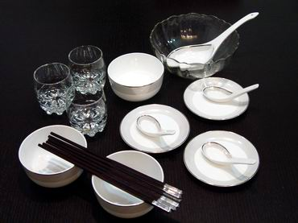
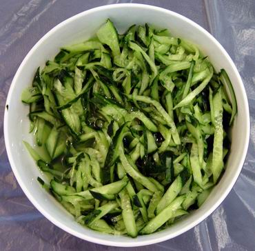
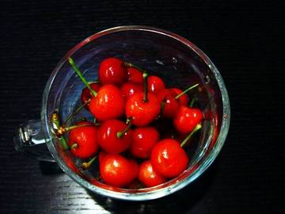
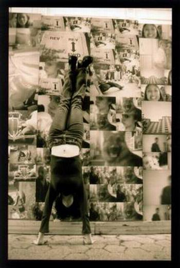
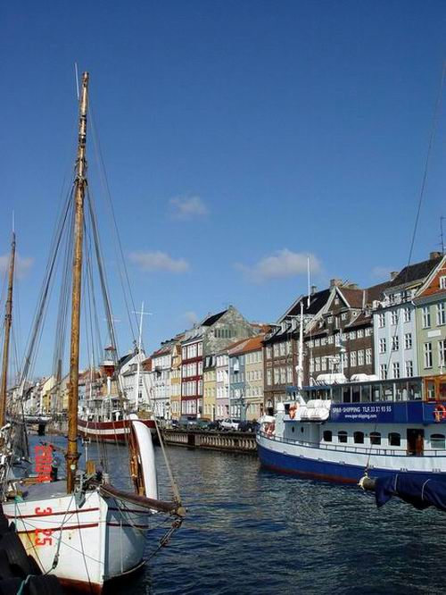
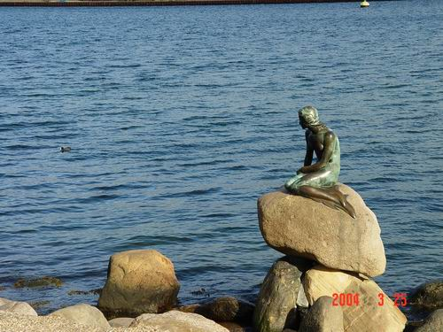
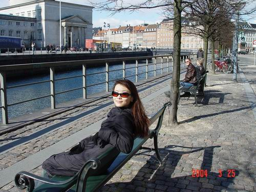
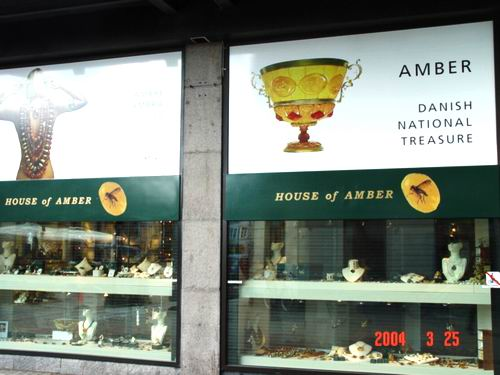

我烧的菜~~ @ May 07, 2004

-这套漂亮且手感好的骨质瓷餐具令人“秀色可餐”



-盐水河虾
-鳗鱼汤（昨晚烧的,无图片，他说和饭店烧的口味一样了）

下午炖了鲜笋鸡汤，晚餐吃

今年第一次他买的樱桃


-盐水河虾
-鳗鱼汤（昨晚烧的,无图片，他说和饭店烧的口味一样了）
下午炖了鲜笋鸡汤，晚餐吃

昨天回到南京，有些累，但仍然是愉快的！
天气又开始变热，短袖衫穿上身了。中午乘车和DAVID去吃味千拉面，饭后在进香河附近的林荫道上手拉手散步，闻着温暖而清新的空气，有些惬意！
洗了两百多张数码照片，花去银子RMB360.00，明天取，希望不比光学相机拍出来的效果逊色。
之后去了大明路上的“福联”，四月的最后一天福联的销售员通知我们去提那辆好不容易运到南京的白色Mondeo，当时我们挺高兴的告诉家人和好友，因为到目前我们都没拿到驾照，所以还计划好回到南京后让谁帮我们把车开回家停在车库里。结果，福联又打电话说那辆白色Mondeo是没有天窗的经典型，不是尊贵型，仍然需要耐心等待几天，好事多磨？

尾灯模仿奔驰S320，看见欧洲大街上Mondeo的尾灯里的线条状灯是圆型的，除此之外没太多的不同。报价在EUR22750.00/辆。
 —姐姐的新居(更多图片)
—姐姐的新居(更多图片)
games, changes and fears
when will they go from here
when will they stop
i belive that fate has brought us here
and we should be together babe
but we’re not
i play it off, but i’m dreaming of you
and i’ll try to keep my cool, but i’m feenin’
i try to say goodbye and i choke
try to walk away and i stumble
though i try to hide it, it’s clear

写完意大利的游记之后，突然缺乏热情继续写最后一站哥本哈根。总有心事未了之感，所以还是得写完它。
在米兰购买了两张前往丹麦哥本哈根的机票，RMB4800一张，是我们所持联票价格的一半还多。联票包括：上海—法兰克福—巴黎，哥本哈根—法兰克福—上海，每张联票价格为RMB9000。在米兰机场办理了登记手续，发现乘客清一色是穿着厚实的西方人面孔，到丹麦的外国人果然很少。MD-87航空飞机，据说此型号飞机出事率相对比较高一些，飞机不是很大，两排座位，缺乏安全感。
 —哥本哈根机场
—哥本哈根机场
出了哥本哈根机场，仿佛掉进冰窟窿里似的，特别冷。叫了辆出租车到朋友帮忙预订的STRAND酒店，司机是个黑人，一路上播放着有关中国的英语新闻，当时还暗地里赞叹司机细心。到了酒店，我们掏出朋友给我们的200丹麦克郎，本打算再付几个欧元支付车费，结果司机说要么都用丹麦克郎，要么都用欧元。他希望我们用欧元支付，这样他可以从中赚些差价，结果我们掏出最后一张一百元丹麦克郎，这多少令他感到意外，他一定以为我们没有丹麦克郎了。事实上，这300元丹麦克郎还是出国前朋友给的，想着我们刚到丹麦一定没时间换MONEY，给些零用钱备急。下车后，那个黑人司机再无我们上车时的热情，连行李都让我们自己从车上拿下来。这个势利的男人，呵呵~~


~~-我们居住在海港附近的STRAND酒店~~


哥本哈根 (Copenhagen, Koebenhavn) 是北欧最大的城市，原意为“商人港口”，有自由港和航空港，是世界交通的枢纽。由于统治欧洲时间最久的皇族玛格丽特女皇二世皇族居住于此，因此，它还有一个别称-“女皇之城”。据出租汽车司机介绍哥本哈根人口150万。这个城市因丰富的艺术与文化本质而在1996年被评为欧洲文化之都。丹麦是世界上社会福利最好的国家之一，国民获得国家多项福利，丹麦人的平均寿命很长。听当地人介绍，如果丹麦人这个月失业了，那么政府将支付其上个月薪水的80%，直到其找到工作为止。当地年轻人每月收入USD5000还嫌薪水低。在丹麦退休金，上至首相，下至平民百姓，街头店员它的退休金一律是平等的。
早期丹麦政府的移民政策尚算宽松，一些中东、印度、巴基斯坦人移民到丹麦，每生一个孩子丹麦政府就补贴若干美圆，后来报纸上报道一个非洲母亲生了7、8个孩子，每年光是拿补贴就能拿到20万美圆左右，然后她把这些钱寄回故乡，在当地也是富裕的家庭了。这件事情被报道后，使得丹麦民众异常气愤，移民政策随之严格起来。3月25日晚上在一家巴基斯坦餐厅用餐，价格异常便宜，但是我很不习惯那种口味。餐厅的主人也是早期移民过来的外国人。丹麦人对中国人的印象相对还行。
 —知道那天有多冷吗？我穿上了几乎所有挡风保暖的衣服，即使戴着手套手指也冻的疼。美人鱼铜像。
—知道那天有多冷吗？我穿上了几乎所有挡风保暖的衣服，即使戴着手套手指也冻的疼。美人鱼铜像。
丹麦的国鸟是白天鹅，过去却是丹麦鹤。丹麦人视此鸟为仙鸟，说婴儿便是由它们衔到人间的。不知从何时起，也不知何故，丹麦鹤的数量骤然减少了。现在，日德兰半岛有个小城市，是丹麦鹤唯一出入的地方。每年春暖花开时节，城里居民都要在自家的房顶上修搭木架，以方便仙鸟筑巢孵蛋。当仙鸟归来时，全国各地有不少人专程赶去，和当地居民一起，像对凯旋的勇士一样加以欢迎。丹麦的交通信号灯一般要比其他国家多两个装置，一是专管公共汽车的横竖道信号灯；二是专管自行车的小型红绿灯。按照交通规则，在路口，公共汽车和自行车享有先行权，其他车辆必须礼让，否则就是违反交通规则。据２００１年的统计，丹麦家庭上网过半。在丹麦，狗要纳税，但离奇的是税的多少取决于狗的高矮。所以，在丹麦，狗都是长长的，矮矮的。

在丹麦，琥珀是最美的东西。在南京金鹰购物中心有家专柜出售的琥珀和我在丹麦看见的那些琥珀差不多，但款式明显不如丹麦多。作为琥珀的发祥地，丹麦人开辟了世界历史上有名的琥珀贸易之路，丹麦人骄傲地称之为“琥珀之路”。据丹麦琥珀屋的资料记载，“琥珀之路”从丹麦北部的日德兰半岛，经由波罗的海口岸，可一直到达地中海、波斯、印度、中国和更远的地方。据说古代西方人向中国皇帝赠送的礼品就是琥珀。

丹麦是人均使用蜡烛最多的国家，夜幕降临，当你在丹麦的小巷里徜徉，你会发现，一幢幢别墅、公寓的窗台上烛光点点。透过窗户（丹麦人一般不挡窗帘），你会欣赏到男女主人对饮咖啡，窃窃私语的情景。丹麦蜡烛色彩斑斓，千姿百态，并有三个特点：一是不流泪，再富想像力的文人在丹麦也写不出“蜡烛有心还惜别，替人垂泪到天明”的诗句；二是不冒烟，人们在烛光下不会有烟薰火燎的感觉；三是可燃时间长，每一种蜡烛上都标有可燃时间。丹麦人引以为豪的是丹麦人均蜡烛销量居世界第一，其含义不仅仅是蜡烛给丹麦漫长的冬夜带来了光明，它体现的更多是一种生活情调、一种心理素质、一种人生境界。

 —在哥本哈根的咖啡馆里
—在哥本哈根的咖啡馆里
丹麦人确实有一部分受气候影响得了抑郁症，有什么办法来缓和呢？就是在各个社区或者健身房都设有专门的仿照太阳光谱的仪器，像个汉堡包似的，人就躺进去，每天躺在里面晒几个小时。由于冬天特别漫长，北欧人也想出一些办法改变这种现状，一个是北欧所有的房子都窗户特别多，而且都特别醒目，可以更多的吸收自然光，第二个就是家里特别注重蜡烛，不管什么场合都要点上一根蜡烛，摆上鲜花，尽量创造温馨的环境，在这个温馨的环境里感觉可能好一点。
刚读到MOKO的BLOG，得知她4月26日和一个只见过一次面的男人办理了结婚手续。有人耳鬓厮磨许多年，每天见面打电话最终却无法走到一起。为MOKO的爱情惊喜。愿她和他新的开始一帆风顺，平安快乐到永远。
来自MOKO的《结婚流水账》
如果“见面”只能用亲自在眼前相对的方式来界定的话，那么，我嫁给的，是一个只见过一次面的男子。
2002年9月30日，搭乘北上的列车，独自一人去到那个从未触摸过的北方城市。
夏末，秋起，记忆中的风穿过车站和地铁隧道。我站在他的背影里，丝巾被拉扯着腾空，他始终牢牢牵着我的手，默默走着，走过温哥华和成都两个漫长的冬天。
2004年4月19日，双流机场出口处的电话旁，我慌乱地寻找，然后奔跑着撞进他的怀抱。
2004年4月26日，海淀区体育馆旁逼仄的小巷里，两个表情混沌蒙昧无知的人冲刺完全部手续，所谓婚姻不是我们相识的结束，却是认识彼此的开始。
坐在他的房间里，敲打他的键盘，经历着他的生活。
我们不是在第二次见面时结婚，我不相信注定，这也不是传奇。
只是爱情确尤其事。
他以为有资格这么对我，在他看来这资格就是写了几篇文章，贷款买了房子，会说一些别人想象不到的甜言蜜语......他的嘴巴什么话都说得出来，我不止一次怀疑这张嘴是否已经脱离了人的面孔。这种人在社会上游刃有余真是悲哀，他使用各种手段进行着炫耀和交易，指甲里透着阴毒，一不小心就会被抓伤。
夜空越黑，星星越亮，它们平静地闪烁着，夜晚正是有了这些发光的星体才变得可爱和令人向往。我想起了杜拉斯说的话，她说：“我们不能对黑暗做出解释，但是我们能够做的，是将黑暗限制在一定范围之内，让黑暗永远只停留在属于它的那一边。
有些女人天生会在爱这个字上栽跟头，天生心甘情愿地接受男人的折磨，男人面对这样的女人会变得肆无忌惮，毫无同情心。而她便把这种痛当作了爱的必需，越是痛，心里越惦念着，尽管心理越来越荒凉、无助。殊不知男人可以将性和爱分割的很好,他们对于女人的共识是女人总是将性与爱混合起来对待。因此，男人们更加残忍。
想要变成另一种人，很快。什么都不想......很快就可以做到！那将不再心事重重，一切都没什么大不了。
但，我不想让这城市变得肮脏，虽然我的内心是潮湿的。
上周DAVID给我看他有关四月底五月初的工作生活计划表，写满整张A4纸......也许从今天起我也该认真的规划一下，包括每天上网和作息时间，包括工作时的态度及健身计划，想不起来什么时候开始频繁地诉说自己的事情，这不是我之前一贯的习惯，所以还包括不轻易向别人说我过去的事情，尽管那是真实的......
—《别了，温哥华》插曲《逃》.MP3
风慢慢冷了，鸟儿飞了
浪漫的云朵开始做梦了，
寂静的海浪，树叶跌荡，
一片片祈祷被谁吹走了
难难难难 说什么
一刀一刀割下寂寞样子
乱乱乱乱 梦什么
满满满满 都是你
怎么到你的天涯海角
如果能又怎能跌倒
我终于放了我的所有
就这样让他带着你逃
等不到我的天荒地老
碾碎爱将苦药煎熬
可是我给了我的所有
就这样让它带着你逃
就这样让它带着你逃
如果我们不能遗忘，生活的每一刻都被牢牢记着；每件欢喜、每件悲哀被牢牢记着，那么，我们显然不会更加快乐，不会更加有知。如果让脑子满满当当，我们会在这种疯狂的记忆中崩溃。
on my way to see my friends
who lived a couple blocks away from me (owh)
as i walked through the subway
it must have been about quarter past three
in front of me
stood a beautiful honey with a beautiful body
she asked me for the time
i said it acute;d cost her her name
a six digit number a date with me tomorrow at nine
did she decline? no
didn acute;t she mind? i don acute;t think so
was it for real? damn sure
what was the deal? a pretty girl aged 24
so was she keen? she couldn acute;t wait
cinnamon queen? let me update
what did she say? she said she acute;d love to
rendezvous
she asked me what we were gonna do
said we acute;d start with a bottle of moet for two
chorus
monday
took her for a drink on tuesday
we were making love by wednesday
and on thursday friday saturday we chilled on sunday
i met this girl on monday
took her for a drink on tuesday
we were making love by wednesday
and on thursday friday saturday we chilled on sunday
verse 2
nine was the time
cos i acute;ll be getting mine
and she was looking fine
smooth talker
she told me
she acute;d love to unfold me all night long
ooh i loved the way she kicked it
from the front to back she flipped (back she flipped it, ooh the
way she
kicked it)
and i oh oh i yeah
hope that she acute;d care
cos i acute;m a man who acute;ll always be there
ooh yeah
i acute;m not a man to play around baby
ooh yeah
cos a one night stand isn acute;t really fair
from the first impression girl hmm you don acute;t seem to be like that
cos there acute;s no need to chat for there acute;ll be plenty for that
from the subway to my home
endless ringing of my phone
when you feeling all alone
all you gotta do
is just call me call me
chorus
monday
took her for a drink on tuesday
we were making love by wednesday
and on thursday friday saturday we chilled on sunday
i met this girl on monday
took her for a drink on tuesday
we were making love by wednesday
and on thursday friday saturday we chilled on sunday
bridge
(break it down, uh break it down)
since i met this special lady
ooh yeah
i can acute;t get her of my mind
she acute;s one of a kind
and i ain acute;t about to deny it
it acute;s a special kind thing
with you-oh…....
chorus
monday
took her for a drink on tuesday
we were making love by wednesday
and on thursday friday saturday we chilled on sunday
i met this girl on monday
took her for a drink on tuesday
we were making love by wednesday
and on thursday friday saturday we chilled on sunday